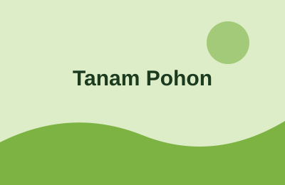
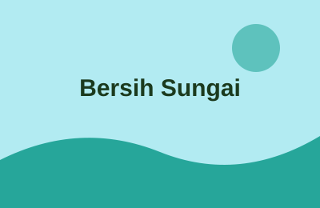
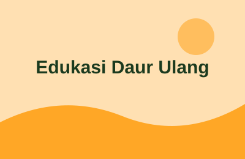

Gerakan 500 Pohon
Penanaman 500 bibit pohon trembesi dan mahoni di area Waduk Tirtayasa bersama warga sekitar.
Aksi nyata kami untuk lingkungan Serang.

Penanaman 500 bibit pohon trembesi dan mahoni di area Waduk Tirtayasa bersama warga sekitar.

Pembersihan Sungai Cibanten yang menghasilkan lebih dari 300 kg sampah terkumpul.

Pelatihan membuat pot tanaman dari botol plastik bekas untuk pelajar SMA.
| Tanggal | Kegiatan | Lokasi | Penanggung Jawab |
|---|---|---|---|
| 31 Oktober 2026 | Sabtu Bersih Sungai | Sungai Cibanten | Nadia Putri |
| 14 November 2026 | Tanam Pohon Sekolah | SMAN 1 Serang | Budi Santoso |
| 28 November 2026 | Workshop Daur Ulang | Aula Kelurahan Cipare | Fajar Nugroho |
| 12 Desember 2026 | Gerakan 500 Pohon | Waduk Tirtayasa | Budi Santoso |